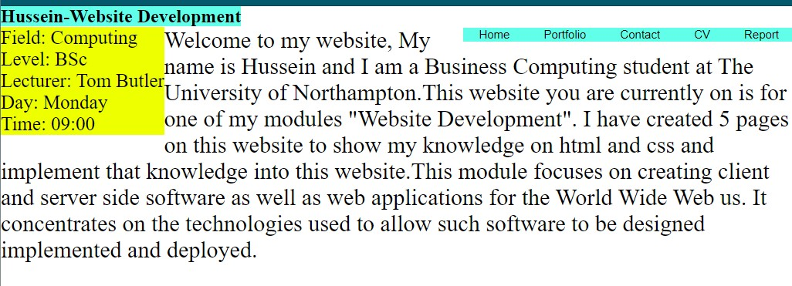
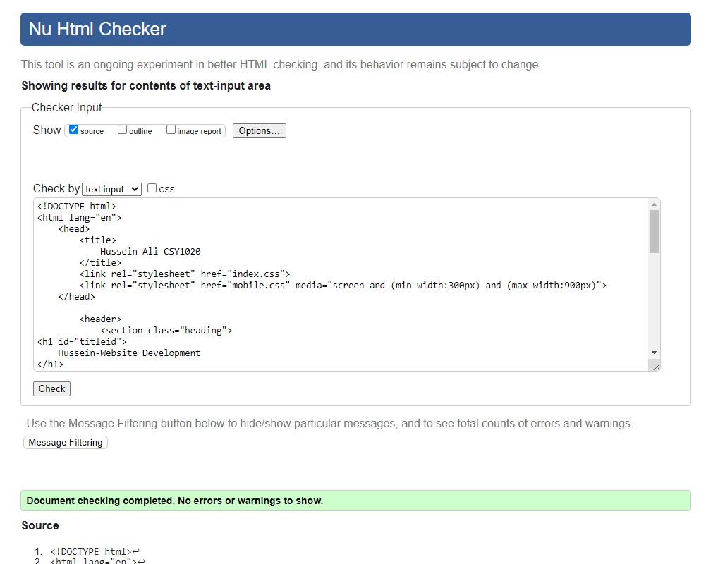

My experience with making this website has been very intuitive and challenging. it has given me a lot of view skills that will help me progressed smoothly into the next parts of this module. I am glad to have run through this experience because I feel like it will be very important information to understand do well in this module and in the real world of work.
When I first started this website, I had almost no clue called what expected of me. I did not know how to create pages, use tags or even change the font size of the text. I looked back at the lectures and use them to help me create this website and make it what it is now. I also used YouTube videos and websites to help me learn different skills helping me create this website. Over time I had progressed a lot and was able to become more independent. Most of the time it was very frustrating, and it was really humbling but sometimes it was very satisfying when the website coming together, and the code worked. I feel that the satisfying times were what kept me motivated to completing this website.
I have found that asking people for help with my work, but I will not experience things whether it would be a classmate or one of my family members was greatly helpful and valuable. I think this is because I could ask them questions quickly and get an answer which is much faster than searching for it online. However, sometimes they would not know so searching online would be my alternative option. I did the research for tasks that would require a lot of help. One example is the navigation bar. I used a YouTube video mainly for that as well as the lectures with my tutor Tom Butler. I made my own little changes to make it my own such as change the colour, font size. This had taught me a lot and it was a good start for me that helped me move on to the next part of the website. It had also taught me the hover feature which helped make the website a lot more professional looking.
I have tried to make the website responsive and I have kept a close eye on the mobile view wall creating a website to see how it would look like for mobile user. It seems to need work for the CV and Report pages. The navigation bar seems to be a lot smaller in the mobile view on these pages and I am not sure why. Below you can see the difference in size for the website. This is on the I Phone 6/7/8 view.
CV Page:
Home Page:
I didn't really do anything special with the font type as i think the default font looked okay. I just made the font size bigger as it was too small to begin with.
Completing the Git hub task was very confusing to me, but I managed to complete it in the end. I have taken screenshots to document the process I went through.
Firstly, I attempted to Complete the task on git GUI but I didn't know how to use it so I went on YouTube and found a tutorial that showed how to use it but it was on the websites instead so I moved on to that and found it a lot better and smooth.
On notepad I copied and pasted all the steps required to complete the task as it did not seem to work the first time. So I thought this was an important point to make here as it was a smart move I made that I will implement in the future in case anything gets deleted.
I opened the CMD and followed the instructions on the video and then it opened up github and I signed in and found that it worked. This is shown in the screenshot below.
I tried to commit my changes using the CMD using a video I had found on Youtube but it was quickly led to failure and a massive hurdle for me and then I rewatched one of the lectures for topic 7 and figured that doing it via VS code was much clearer and simpler than going all over the internet to find out was just a simple process that was explained in the lecture. This is shown in the screenshot below
HTML and CSS Validations:
Index
Portfolio
Contact
This is the only page I had an error with, I couldn't find a way to fix this.
CV Page
Report
Index CSS
Portfolio CSS
Contact CSS
CV CSS
Report CSS
Mobile CSS
Mobile version
Below we can see the home page on the mobile version. I tried to make the navigation system look different but it seems to take up half the page which I did not want. I attempted to make the hamburger icon but it didn't function properly. This is the same for every page in the mobile version. I tried to fix this but there was no luck unfortunatley. On youtube I saw that people were using javascript to make the hamburger Icon work properly.